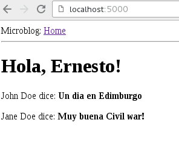

Continuando con la serie de tutorial de flask, ahora se explicará el uso de plantillas html.
En el primer artículo se explicó como usar docker y docker-compose.
La serie de artículos de flask lo pueden revisar en el siguiente enlace.
Este artículo se basa en el segundo artículo del blog de Miguel Grinberg.
La estructura de archivos y directorios del proyecto se muestra a continuación:
tutorial-flask
├── app
│ ├── __init__.py
│ ├── __pycache__
│ │ ├── __init__.cpython-35.pyc
│ │ └── views.cpython-35.pyc
│ ├── templates
│ │ ├── base.html
│ │ └── index.html
│ └── views.py
├── docker-compose.yml
├── Dockerfile
├── README.md
├── run.py
└── tmp
Los nuevos archivos son:
base.html: Es la plantilla base que se usará en las páginas web.index.html: Es la página inicial que hereda de la plantilla base.html.views.py: Ahora este archivo manejará el pase de información vía renderizado a las plantillas.
Los demás archivos se explicaron ya en el artículo anterior.
Archivo templates/base.html:
<html>
<head>
{% if title %}
<title>{{ title }} - microblog</title>
{% else %}
<title>microblog</title>
{% endif %}
</head>
<body>
<div>Microblog: <a href="/index">Home</a></div>
<hr>
{% block content %}{% endblock %}
</body>
</html>
Está plantilla define el código base html de la página, donde se define el título si se le pasa como variable, si no se coloca directamente en el código html. Luego se colocá el enlace del blog y se define el bloque de contenido el cual se usará en la plantilla index.html.
Archivo templates/index.html:
{% extends "base.html" %}
{% block content %}
<h1>Hola, {{ usuario.nickname }}!</h1>
{% for post in posts %}
<p>
{{ post.autor.nickname }} dice: <b>{{ post.cuerpo }}</b>
</p>
{% endfor %}
{% endblock %}
Lo primero que se hace es extender las características que maneja base.html, luego se muestra el bloque content, donde se define un h1, luego se muestra los posts del microblog.
Ahora toca el turno al archivo views.py:
#Se importa render_template para renderizar plantillas html
from flask import render_template
#Se importa la aplicacion
from app import app
#Se define la ruta del url raiz e index
@app.route('/')
@app.route('/index')
def index():
#Se define el nombre del usuario
usuario = {'nickname': 'Ernesto'}
#Se define los posts del blog
posts = [
{
'autor': {'nickname': 'John Doe'},
'cuerpo': 'Un dia en Edimburgo'
},
{
'autor': {'nickname': 'Jane Doe'},
'cuerpo': 'Muy buena Civil war!'
}
]
#Se devuelve index.html con el titulo, usuario y posts
return render_template("index.html",
title='Home',
usuario=usuario,
posts=posts)
Con los diccionarios se pasa los datos a las plantillas al devolver el renderizado de la plantilla con la página web (index.html, el título de la ágina, el usuario y los posts).
Sólo queda construir la imagen de docker y levantar la aplicación usando docker-compose:
docker-compose build
Building web
Step 1 : FROM python
---> 7fd24fb1b492
Step 2 : WORKDIR /code
---> Using cache
---> bdc41d9c0a55
Step 3 : RUN pip install --upgrade pip
---> Using cache
---> a2f64276e289
Step 4 : RUN pip install flask
---> Using cache
---> 56d3d1077646
Step 5 : RUN pip install flask-login
---> Using cache
---> ebe8bc959ad8
Step 6 : RUN pip install flask-openid
---> Using cache
---> fe54237ce068
Step 7 : RUN pip install flask-mail
---> Using cache
---> f1594ad12f2b
Step 8 : RUN pip install flask-sqlalchemy
---> Using cache
---> 6d04889555c2
Step 9 : RUN pip install sqlalchemy-migrate
---> Using cache
---> d25cd2a54289
Step 10 : RUN pip install flask-whooshalchemy
---> Using cache
---> 4479491e59aa
Step 11 : RUN pip install flask-wtf
---> Using cache
---> 170b10c7dea0
Step 12 : RUN pip install flask-babel
---> Using cache
---> fe581f26a1e5
Step 13 : RUN pip install guess_language
---> Using cache
---> 6d2d290ed6d3
Step 14 : RUN pip install flipflop
---> Using cache
---> 35e2dff248ce
Step 15 : RUN pip install coverage
---> Using cache
---> 7012043af8e9
Step 16 : RUN pip install redis
---> Using cache
---> ce2854de687f
Step 17 : EXPOSE 5000
---> Using cache
---> f947cd2c0d69
Step 18 : ADD . /code
---> Using cache
---> 3cc197931bf8
Step 19 : CMD python run.py
---> Using cache
---> 7154441c088c
Successfully built 7154441c088c
Es necesario reconstruir la imagen para que tome el volumen definido en docker-compose.yml.
Ahora se levanta la aplicación:
docker-compose up
Creating tutorialflask_web_1
Attaching to tutorialflask_web_1
web_1 | * Running on http://0.0.0.0:5000/ (Press CTRL+C to quit)
web_1 | * Restarting with stat
web_1 | * Debugger is active!
web_1 | * Debugger pin code: 309-259-945
Al abrir el navegador en la página http://localhost:5000 se tiene lo que muestra la siguiente imagen:

Para detener la aplicación se usa docker-compose down:
docker-compose down
Stopping tutorialflask_web_1 ... done
Removing tutorialflask_web_1 ... done
El código de este artículo lo pueden ver en la rama articulo2 articulo2 del repositorio en gitlab.
¡Haz tu donativo! Si te gustó el artículo puedes realizar un donativo con Bitcoin (BTC) usando la billetera digital de tu preferencia a la siguiente dirección: 17MtNybhdkA9GV3UNS6BTwPcuhjXoPrSzV
O Escaneando el código QR desde la billetera:

Comments !